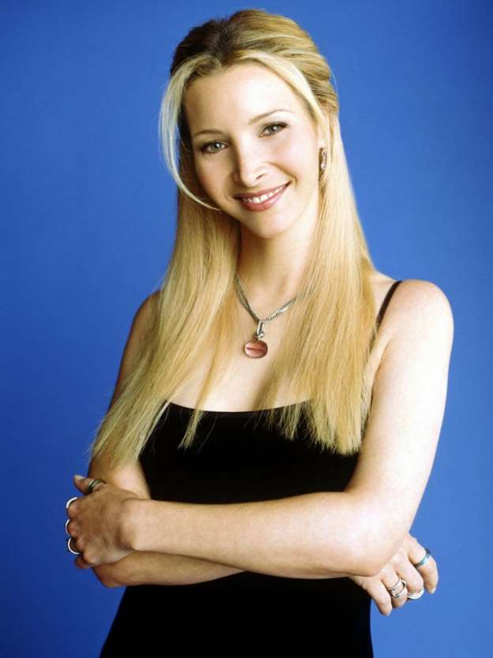

Phoebe Buffay

Al no haber tenido una niñez normal, Phoebe es ingenua e inocente. A veces todavía es una niña en el
corazón pero también demuestra sabiduría. No aprende a ir en bicicleta hasta que Ross le compra una y le
enseña cómo ir en ella. Ella cree que Papá Noel existe, hasta que Joey le dice lo contrario. Su
ingenuidad es un chiste recurrente durante toda la serie. Phoebe también destaca en el grupo por tener
inteligencia callejera; habiendo crecido sin hogar, sabe cómo salir adelante. En un capítulo de la
serie, ella y Ross son asaltados, y termina teniendo un feliz reencuentro con un viejo amigo de los días
en que ella robaba. En otro episodio, ella muestra que lleva un cuchillo en el bolso y otro en el
calcetín derecho. Phoebe a menudo utiliza su infancia caótica y su pasado traumático como estratagema de
simpatía con sus amigos. Habitualmente utiliza las referencias a la muerte de su madre para salirse con
la suya. Además, a Phoebe no parece importarle que sus amigos sepan que es una estratagema. En un
episodio, Rachel dice, "Espera un minuto, ¡no puedes usar eso para obtener el teléfono del chico lindo y
la última magdalena de arándanos!" a lo que Phoebe responde, "¿Ya usé eso hoy? Lo siento".